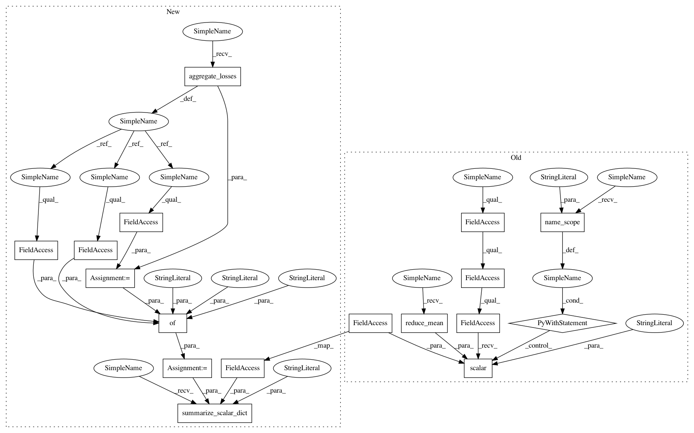

aa3c6a5f79d82044306f3a11f1de6b7231163d90,tf_agents/agents/categorical_dqn/categorical_dqn_agent.py,CategoricalDqnAgent,_loss,#CategoricalDqnAgent#Any#Any#Any#Any#Any#Any#,237
Before Change
if batch_squash is not None:
target_distribution = batch_squash.unflatten(target_distribution)
chosen_action_logits = batch_squash.unflatten(chosen_action_logits)
critic_loss = tf.reduce_mean(
tf.reduce_sum(
tf.compat.v1.nn.softmax_cross_entropy_with_logits_v2(
labels=target_distribution,
logits=chosen_action_logits),
axis=1))
else:
critic_loss = tf.reduce_mean(
tf.compat.v1.nn.softmax_cross_entropy_with_logits_v2(
labels=target_distribution,
logits=chosen_action_logits))
with tf.name_scope("Losses/"):
tf.compat.v2.summary.scalar(
"critic_loss", critic_loss, step=self.train_step_counter)
if self._debug_summaries:
distribution_errors = target_distribution - chosen_action_logits
with tf.name_scope("distribution_errors"):
common.generate_tensor_summaries(
After Change
labels=target_distribution,
logits=chosen_action_logits)
agg_loss = common.aggregate_losses(
per_example_loss=critic_loss,
regularization_loss=self._q_network.losses)
total_loss = agg_loss.total_loss
dict_losses = {"critic_loss": agg_loss.weighted,
"reg_loss": agg_loss.regularization,
"total_loss": total_loss}
common.summarize_scalar_dict(dict_losses,
step=self.train_step_counter,
name_scope="Losses/")
if self._debug_summaries:
distribution_errors = target_distribution - chosen_action_logits
with tf.name_scope("distribution_errors"):
In pattern: SUPERPATTERN
Frequency: 3
Non-data size: 17
Instances
Project Name: tensorflow/agents
Commit Name: aa3c6a5f79d82044306f3a11f1de6b7231163d90
Time: 2020-02-24
Author: sguada@google.com
File Name: tf_agents/agents/categorical_dqn/categorical_dqn_agent.py
Class Name: CategoricalDqnAgent
Method Name: _loss
Project Name: tensorflow/agents
Commit Name: aa3c6a5f79d82044306f3a11f1de6b7231163d90
Time: 2020-02-24
Author: sguada@google.com
File Name: tf_agents/agents/dqn/dqn_agent.py
Class Name: DqnAgent
Method Name: _loss
Project Name: tensorflow/agents
Commit Name: aa3c6a5f79d82044306f3a11f1de6b7231163d90
Time: 2020-02-24
Author: sguada@google.com
File Name: tf_agents/agents/categorical_dqn/categorical_dqn_agent.py
Class Name: CategoricalDqnAgent
Method Name: _loss
Project Name: tensorflow/agents
Commit Name: aa3c6a5f79d82044306f3a11f1de6b7231163d90
Time: 2020-02-24
Author: sguada@google.com
File Name: tf_agents/agents/behavioral_cloning/behavioral_cloning_agent.py
Class Name: BehavioralCloningAgent
Method Name: _loss